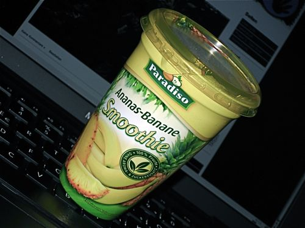

Super Price Reduction Expansive Assortment Medications
Nachdem er in FFF000 schon Erwähnung gefunden hat, möchte ich ihn hier noch einmal genauer vorstellen: Den gemeinen Smoothie. Genauer gesagt geht es um den Paradiso "Ananas-Banane"-Smoothie vom Penny Markt (einem der siffigsten Vertreter der deutschen Discounterszene).

Jener Smoothie jedoch wird durchschnittlich aus 1/8 Ananas, einer Banane und 6 - Sechs(!) - Trauben hergestellt. Er enthält von Natur aus Zucker, möchte vor dem Genuss geschüttelt werden und repräsentiert 1/5 der täglich benötigten Obstmenge. Der Fruchtgehalt wird kühnerweise mit 100% angegeben.
Ich habe soeben einen Smoothe konsumiert und habe schon jetzt das Gefühl, dass ich Bäume ausreißen könnte. Einfach großartig. Obwohl das natürlich auch daran liegen könnte, dass verschimmeltes Obst verarbeitet wurde, und die Pilzsporen langsam in meinem Hirn ankommen. Who knows…?
8 Kommentare zu "Super Price Reduction Expansive Assortment Medications"
- Externe Links im selben Fenster öffnen
- Externe Links in neuem Fenster öffnen
magnus
DU Arsch hast !!MEINEN!! Smoothie ausgesoffen!!!!
Das gibt auf die Nase, aber fäd!!! Auch die bei dir vom Smoothie freigesetzte Kraft wird dir nichts nützen! Ich war mal Boxmeister im Untergewicht.
Herschel Rubinstein
den smoothie habe ich mir selbst gekauft, aber ich werde deinen austrinken, wenn du dich nicht sofort entschuldigst
Lex Dildo
Falls Sie es noch nicht wussten: Die Banane ist das Schwein unter den Obsten, so wie der Lachs das Schwein unter den Fischen und das Schwein das Schwein unter den Fleischen ist. Günstig im Unterhalt und groß im Ertrag. Weniger groß aber im Geschmack. In nahezu allen Fruchtderivaten ist sie omnipräsentes Füll- und Süßemittel. Und eignet sich hervorragend zum Andicken... sogar in dem von mir bevorzugten Viva-Vital Himbeer-Pfirsichdings (Plus) ist sie mit drin. Wenn auch versteckt unter den harmloseren, aber ungleich wohlschmeckenderen Zutaten. Schande!
Herschel Rubinstein
das glaube ich gern. die banane wurde nicht nur im osten vollkommen überschätzt. außerdem versuche ich generell meinen co2-fußabdruck klein zu halten und verzichte auf importiertes obst. stattdessen pelle ich mir lieber eine herzhafte lauchstange.
magnus
@Herschel: Deine Nase wird bluten, der Grund ist mir inzwischen egal! Vielleicht reicht mir auch schon dein Ibook als Grund oder mein nicht ausgespielter Gewinn. Also freu dich auf eine Runde Phase-5
Du bekommst auch die Hahn-Spielfigur. Vielleicht.
@Lex: Sollte die Basis eines jeden guten Smoothies etwa Schweinepüree sein?
Herschel Rubinstein
aber lieber magnus, ich habe doch ein MacBook, und dein gewinn schlummert beim robert. damit habe ich nichts zu tun.
übrigens lasse ich mir gerade deinen smoothie schmecken. die frage ist nur, wo ich die restlichen drei herbekomme um meine tägliche obstration vollzumachen?
Rick
So, jetzt habe ich bei Wikipedia nachgesehen damit auch jemand aus meiner Generation erfährt was ein Smoothie ist. Also kein Weichei, sondern ein Konwienienzprodukt bei dem die ganze Frucht verarbeitet wird, inklusive Holzsteige, Pflücker und Transport-LKW, in ganzen Stücken. Ein interessanter Ansatz...
Herschel Rubinstein
...und sehr gesund. wie heißt es im volksmund so schön: "5 smoothie am tag, erspart dir doktor und sarg".